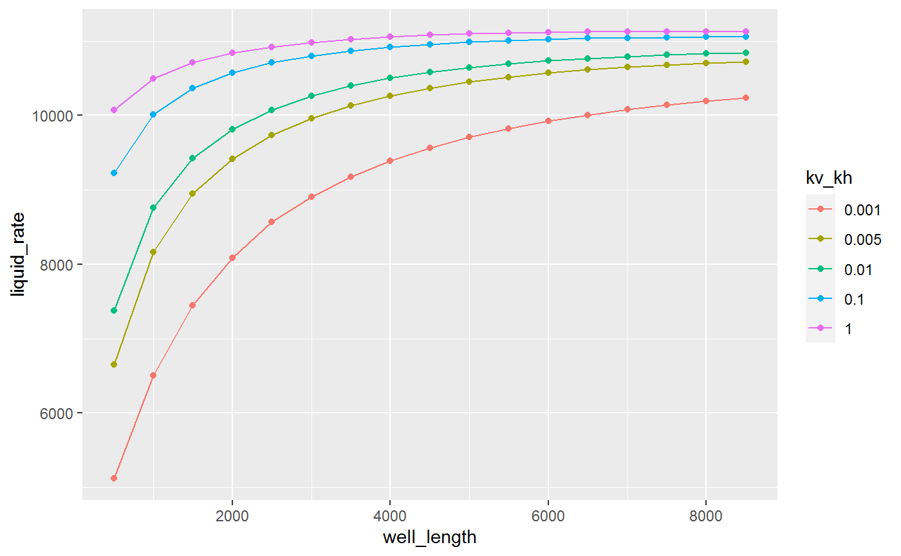

# prosperHorizSys.R
library(rOpenserver)
library(tidyr)
library(ggplot2)
# function to get the filename for the model
get_model_filename <- function(model) {
models_dir <- system.file("models", package = "rOpenserver")
model_file <- file.path(models_dir, model)
if (!file.exists(model_file)) stop("Model not found ...") else
return(model_file)
}# well lengths and vertical anisotropy vectors
well_length <- seq(500, by = 500, length.out = 17)
kv_kh <- c(0.001, 0.005, 0.01, 0.1, 1.0)
df <- data.frame(well_length)# Initialize and start OpenServer
pserver <- OpenServer$new()
cmd = "PROSPER.START"
DoCmd(pserver, cmd)
# open model
model_file <- get_model_filename(model = "HORWELLDP.OUT")
open_cmd <- "PROSPER.OPENFILE"
open_cmd <- paste0(open_cmd, "('", model_file, "')")
DoCmd(pserver, open_cmd)# iterate through anisotropy values
for (k in kv_kh) {
DoSet(pserver, "PROSPER.SIN.IPR.Single.Vans", k)
# iterate through all well length values of interest
i <- 1
for (wlen in df[["well_length"]]) {
# set well length
DoSet(pserver, "PROSPER.SIN.IPR.Single.WellLen", wlen)
# set length in zone 1
DoSet(pserver, "PROSPER.SIN.IPR.Single.HorizdP[0].ZONLEN", wlen)
DoCmd(pserver, "PROSPER.anl.SYS.CALC") # do calculation
# store liquid rate result in dataframe for each anisotropy scenario
df[[as.character(k)]][i] <-
as.double(DoGet(pserver, "PROSPER.OUT.SYS.RESULTS[0][0][0].SOL.LIQRATE"))
i <- i + 1
}
}
print(df) well_length 0.001 0.005 0.01 0.1 1
1 500 5122.723 6654.130 7376.862 9225.225 10074.80
2 1000 6502.892 8158.698 8763.273 10010.193 10500.44
3 1500 7442.298 8947.091 9422.393 10368.828 10711.88
4 2000 8081.572 9416.705 9815.624 10576.695 10838.98
5 2500 8565.691 9734.755 10077.367 10710.160 10924.37
6 3000 8909.852 9963.207 10263.006 10803.312 10984.46
7 3500 9177.887 10134.045 10400.360 10870.907 11027.95
8 4000 9391.362 10265.520 10505.026 10921.186 11059.91
9 4500 9564.346 10368.811 10585.193 10959.103 11083.47
10 5000 9706.521 10451.304 10647.387 10987.987 11100.84
11 5500 9824.676 10517.964 10696.969 11009.371 11112.55
12 6000 9923.822 10571.524 10736.874 11025.970 11121.27
13 6500 10007.648 10614.573 10768.802 11038.446 11124.79
14 7000 10079.021 10650.133 10794.942 11044.998 11127.86
15 7500 10140.119 10679.603 10813.414 11051.086 11129.07
16 8000 10192.705 10701.022 10830.166 11055.076 11128.84
17 8500 10238.145 10720.846 10843.626 11057.347 11127.42# convert dataframe to tidy dataset
df_gather <- gather(df, kv_kh, liquid_rate, '0.001':'1')
# plot
g <- ggplot(df_gather, aes(x = well_length, y = liquid_rate, color = kv_kh)) +
geom_line() +
geom_point()
print(g)